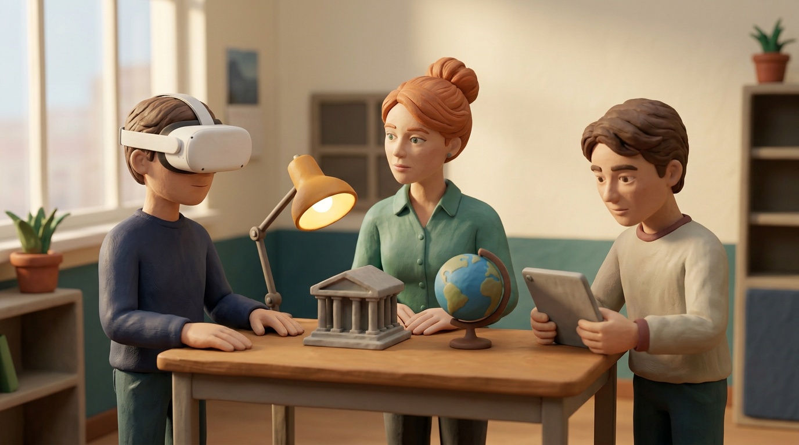
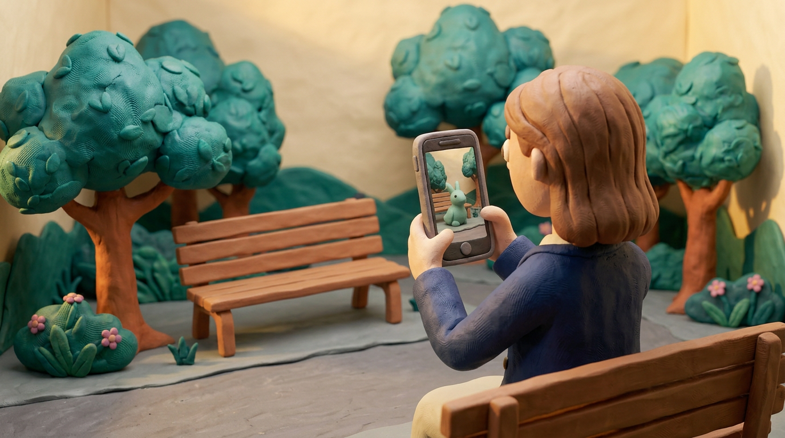
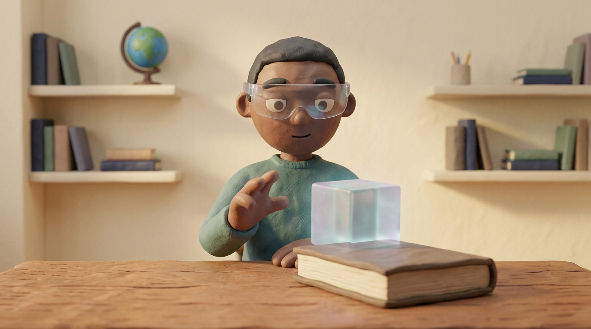
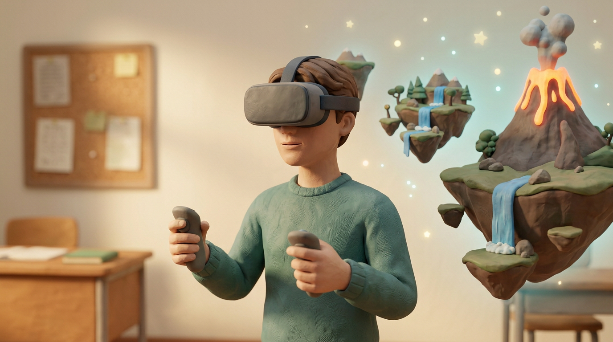
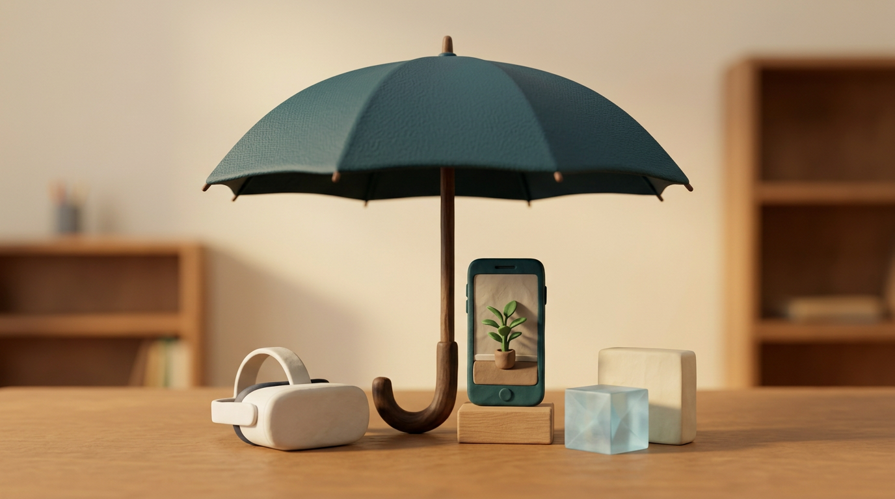

1. Che cosa vede chi usa un visore per la realtà virtuale?
| A)Un ambiente digitale | B)Solo il tavolo reale |
| C)Un libro di carta | D)Solo la classe reale |
PRINCIPI, EVIDENZE E USO DIDATTICO DI VR, AR, MR E XR


La realtà virtuale (VR) è un ambiente creato dal computer. Può riprodurre un luogo reale oppure immaginario, come un museo o una città del futuro. [2] [3]
Con un visore vediamo l’ambiente digitale al posto della stanza. Se muoviamo la testa, il programma aggiorna l’immagine e ci mostra un’altra parte dell’ambiente. [3]
Il visore può mostrare un’immagine leggermente diversa a ciascun occhio. In questo modo gli oggetti possono sembrare profondi e non piatti. [3]
Con i controller, cioè i comandi tenuti in mano, possiamo esplorare un luogo o spostare oggetti virtuali. Alcuni sistemi riconoscono anche i movimenti delle mani senza guanti: è il tracciamento delle mani. [2]
Se vediamo una mano virtuale afferrare un oggetto, non significa che ne sentiamo davvero il peso. Per avere una sensazione tattile servono dispositivi appositi.
L’immersione riguarda quanto la tecnologia ci circonda con immagini e suoni. La presenza è invece la sensazione personale di trovarsi in quel luogo. [3]
Sentirsi presenti può rendere l’esperienza coinvolgente. Da sola, però, questa sensazione non dimostra che abbiamo imparato. [3]
IN SINTESI | |
|---|---|
| AMBIENTE | La VR mostra un luogo creato dal computer. |
| VISORE | L’immagine cambia quando muoviamo la testa. |
| COMANDI | Controller o mani permettono di agire nella scena. |
| IMMERSIONE | Dipende da come la tecnologia ci circonda. |
| PRESENZA | È la sensazione di essere nel luogo virtuale. |

La realtà aumentata (AR) aggiunge contenuti digitali all’ambiente reale. Il mondo intorno a noi resta visibile, anche attraverso una fotocamera. [1] [2]
Per esempio, possiamo inquadrare un tavolo con un tablet e vedere sullo schermo un modello digitale che sembra appoggiato sul tavolo.
Il programma mantiene il modello nella posizione giusta rispetto al tavolo. Questo collegamento con lo spazio reale si chiama allineamento. Non basta mostrare un’immagine qualsiasi sullo schermo. [1]
Per mantenere l’allineamento, il sistema usa la fotocamera e altri sensori. La realtà aumentata può funzionare su tablet, smartphone o dispositivi indossabili. [1] [2]
Alcune applicazioni usano anche l’intelligenza artificiale, ma non è indispensabile per la realtà aumentata. Per una lezione conta che il contenuto sia corretto, chiaro e utile. [1] [2]
IN SINTESI | |
|---|---|
| AMBIENTE | Il mondo reale rimane visibile. |
| CONTENUTI | Al mondo reale si aggiungono oggetti digitali. |
| ALLINEAMENTO | Il modello resta legato allo spazio reale. |
| DISPOSITIVI | Si possono usare tablet, telefoni o visori. |
| UTILITÀ | Il contenuto deve aiutare la lezione. |

La realtà mista (MR) unisce ambiente reale e contenuti digitali. Qui il termine indica esperienze che riconoscono lo spazio e permettono di agire con gli oggetti virtuali. [2]
Un modello digitale può sembrare appoggiato a un tavolo e restare nello stesso punto anche quando ci spostiamo. Questa funzione si chiama ancoraggio. [2]
Se un libro reale si trova davanti al modello, il programma può nasconderne la parte che dovrebbe stare dietro al libro. Questo effetto si chiama occlusione. [2]
Il modello digitale, però, non pesa e non spinge davvero il libro. Per sentire contatto o resistenza servono dispositivi fisici appositi.
Il significato di «realtà mista» può cambiare secondo il contesto. La MR non è automaticamente migliore della AR o della VR: conta l’attività che vogliamo svolgere. [2] [3]
IN SINTESI | |
|---|---|
| REALTÀ MISTA | Combina l’ambiente reale e oggetti digitali. |
| ANCORAGGIO | Un oggetto digitale resta in un punto dello spazio. |
| OCCLUSIONE | Un oggetto reale può nascondere una parte digitale. |
| CONTATTO | Un’immagine da sola non dà peso o resistenza. |
| SCELTA | La MR non è sempre la soluzione migliore. |

Realtà estesa, in inglese extended reality, si abbrevia con XR. È un nome generale che comprende realtà virtuale, aumentata e mista. [2]
Queste esperienze sono diverse: può cambiare quanto vediamo del mondo reale e come possiamo agire. Non formano una classifica dal peggiore al migliore. [2] [3]
Per confrontare un oggetto vero con un modello digitale può essere utile la realtà aumentata. Per esplorare un ambiente ricostruito può essere utile la realtà virtuale. [3]
Prima scegliamo che cosa imparare, poi lo strumento adatto. Un’esperienza più immersiva non fa imparare di più in modo automatico. [3]
IN SINTESI | |
|---|---|
| XR | È il nome generale delle tecnologie di realtà estesa. |
| COMPRENDE | VR, AR e MR sono forme di realtà estesa. |
| DIFFERENZE | Cambiano ambiente visibile e modi di agire. |
| SCELTA | Lo strumento dipende dall’obiettivo della lezione. |
A scuola le tecnologie XR possono aiutare a esplorare luoghi o simulare situazioni difficili da ricreare in aula. Per esempio, si può osservare un edificio antico ricostruito. [3] [4]
Le XR, però, non fanno imparare automaticamente. Una revisione degli studi universitari ha rilevato che spesso si valutava la facilità d’uso più di ciò che gli studenti avevano imparato. [4]
Quelle ricerche riguardavano l’università. I loro risultati non si possono trasferire automaticamente a ogni classe della scuola secondaria. [4]
Il modello CAMIL aiuta a studiare l’apprendimento nella VR immersiva. Considera, tra le altre cose, la motivazione e la possibilità di agire nell’ambiente. [3]
Il carico cognitivo è l’impegno mentale richiesto da un compito. Troppi dettagli o comandi possono distrarre e rendere più difficile concentrarsi. [3]
Una lezione può seguire tre momenti. Prima si spiegano obiettivo e comandi; durante si esplora con una guida; dopo si discute e si usa ciò che si è imparato. [3]
Per favorire l’accessibilità si preparano alternative: comandi diversi, sottotitoli e attività su schermo o materiali senza visore, quando necessari. [2]
Il tracciamento delle mani può essere utile, ma non è adatto a tutte le persone. Non deve essere l’unico modo per partecipare. [2]
Lo spazio deve essere sicuro. Occorrono pause e la possibilità di fermarsi subito. Se una persona prova nausea, vertigini o affaticamento, l’attività si interrompe. [2]
Durata e attività si adattano alla persona e alle indicazioni del dispositivo. Non c’è un tempo unico da imporre a tutti.
Per capire se la classe ha imparato, non basta chiedere se l’esperienza è piaciuta. Si possono proporre domande, spiegazioni o un nuovo compito legato all’obiettivo. [3] [4]
IN SINTESI | |
|---|---|
| POSSIBILITÀ | Le XR aiutano a esplorare e simulare. |
| OBIETTIVO | L’attività serve a imparare qualcosa di preciso. |
| TRE MOMENTI | Si prepara, si esplora e poi si riflette. |
| ACCESSIBILITÀ | Si offrono modi diversi per partecipare. |
| SICUREZZA | Si fanno pause e ci si ferma se si sta male. |
| VERIFICA | Si controlla che cosa è stato imparato. |
Leggi ogni domanda e scegli una sola risposta.
1. Che cosa vede chi usa un visore per la realtà virtuale?
| A)Un ambiente digitale | B)Solo il tavolo reale |
| C)Un libro di carta | D)Solo la classe reale |
2. Che cosa significa sentirsi presenti in un ambiente virtuale?
| A)Aver imparato tutto | B)Sentirsi dentro quel luogo |
| C)Toccare oggetti reali | D)Indossare sempre guanti |
3. Che cosa fa la realtà aumentata?
| A)Spegne la fotocamera | B)Nasconde il mondo reale |
| C)Aggiunge oggetti digitali | D)Mostra solo un mondo virtuale |
4. Un modello resta nello stesso punto del tavolo. Come si chiama questa funzione?
| A)Sottotitolo | B)Valutazione |
| C)Immersione | D)Ancoraggio |
5. Che cosa comprende la realtà estesa, indicata con XR?
| A)VR, AR e MR | B)Solo la realtà virtuale |
| C)Solo il mondo reale | D)Solo i libri digitali |
6. Da che cosa conviene partire per scegliere la tecnologia per una lezione?
| A)Dal visore più costoso | B)Dall’obiettivo della lezione |
| C)Dalla moda del momento | D)Dalla scena più rumorosa |
7. Un’esperienza virtuale fa imparare sempre, da sola?
| A)Sì, se dura a lungo | B)Sì, con un visore nuovo |
| C)No, servono attività e guida | D)No, se mostra immagini |
8. Quale scelta aiuta più persone a partecipare?
| A)Usare un solo comando | B)Eliminare le pause |
| C)Usare solo il visore | D)Offrire modi diversi |
9. Se uno studente prova nausea, che cosa si fa?
| A)Si interrompe l’attività | B)Si continua fino alla fine |
| C)Si aumenta il volume | D)Si tolgono le pause |
10. Come si può verificare che cosa è stato imparato?
| A)Chiedendo solo se è piaciuto | B)Con un compito sul tema |
| C)Contando i visori | D)Allungando l’attività |
VR · AR · MR · XR

MONDO DIGITALEVISORE · PRESENZA

MONDO REALEMODELLO · FOTOCAMERA

REALE E DIGITALEANCORAGGIO · OCCLUSIONE

VR · AR · MRREALTÀ ESTESA
ESPLORAZIONESIMULAZIONE · GUIDA
OBIETTIVO · ATTENZIONEVERIFICA
ALTERNATIVE · PAUSECOMANDI DIVERSI
[1] Azuma, R. T. (1997). A Survey of Augmented Reality. Presence: Teleoperators and Virtual Environments, 6(4), 355–385.
[2] W3C, Accessible Platform Architectures Working Group (2021). XR Accessibility User Requirements. Working Group Note, 25 agosto 2021.
Nota del gruppo W3C: non è una norma di conformità.
[3] Makransky, G.; Petersen, G. B. (2021). The Cognitive Affective Model of Immersive Learning (CAMIL): a Theoretical Research-Based Model of Learning in Immersive Virtual Reality. Educational Psychology Review, 33, 937–958.
[4] Radianti, J.; Majchrzak, T. A.; Fromm, J.; Wohlgenannt, I. (2020). A systematic review of immersive virtual reality applications for higher education: Design elements, lessons learned, and research agenda. Computers & Education, 147, 103778.
Articolo scritto da ANDREA CENTINARO.